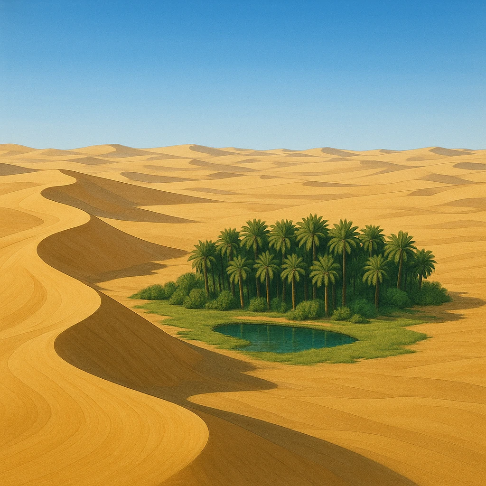
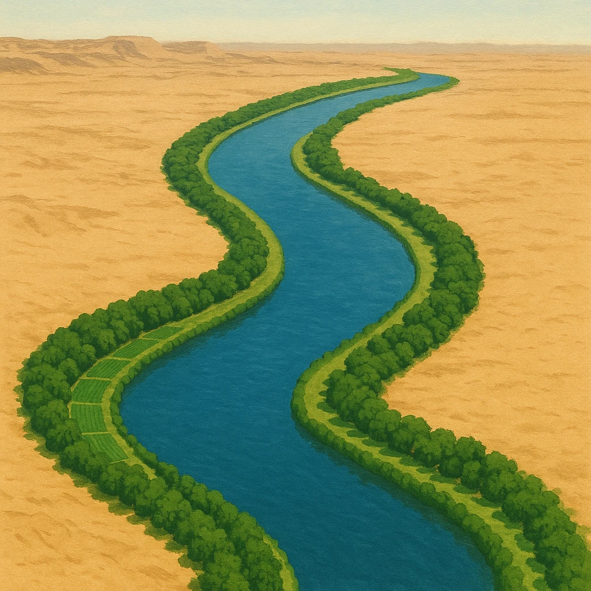
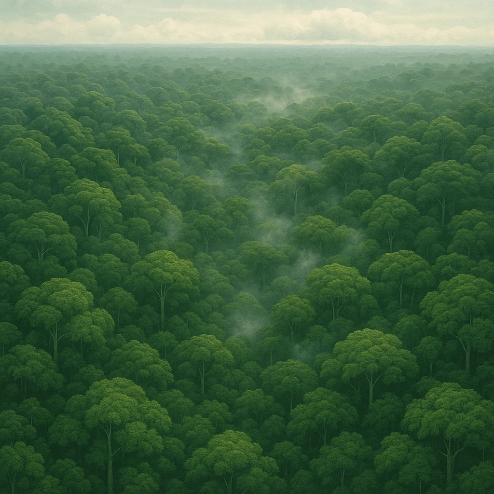

Ⅰ-2
自然カタログ
6つの自然を、
特徴
でおさえる
①
サハラ砂漠
世界最大
の砂漠。大陸北部に広がる。
②
ナイル川
世界最長
の川。北東部を流れ、古代
エジプト文明
が栄えた。
③
ギニア湾
西アフリカ沿岸。かつて
奴隷貿易
の拠点となった。
④
コンゴ盆地
赤道直下の低地。
熱帯雨林
が広がる。
⑤
エチオピア高原
標高が高く、赤道近くでも過ごしやすい。
⑥
マダガスカル島
南東沖にうかぶ大きな島。独自の生き物が多い。



第6章 アフリカ州
SEED EDUCATION